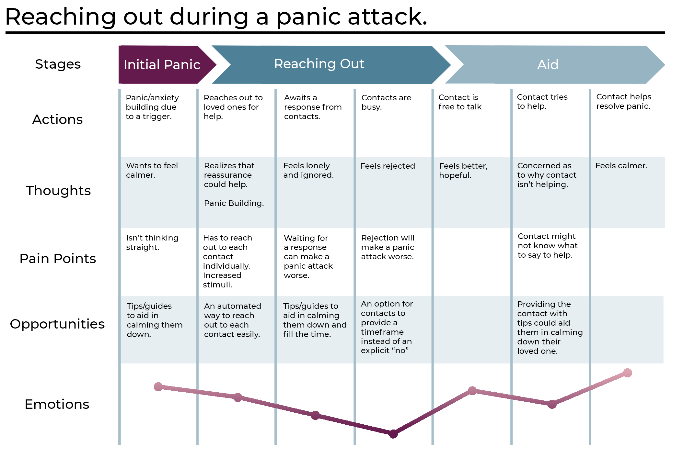
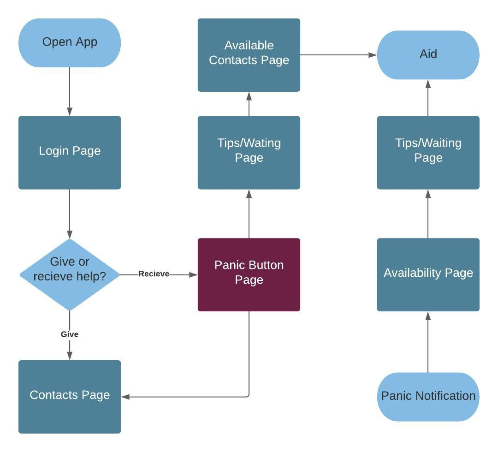
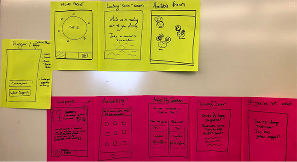
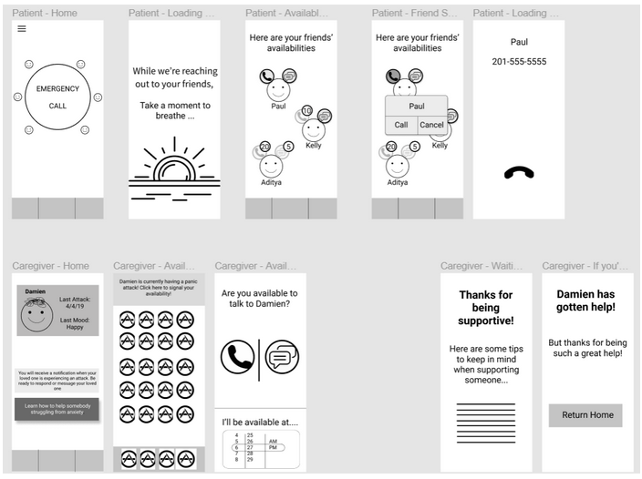

Support Circle
Helping people in need reach out to their support circle quickly through an easy to use app.
Timeline
3 Weeks
April - May 2019
My Role
User Research
Interaction Design
Tools
Adobe Photoshop, Adobe Indesign, Figma
"How can we design a caretaking application that quickly and easily connects someone in need with an available member of their support circle with as little stress as possible?"
For Many people prone to panic attacks, reaching out for help can be extremely difficult. During a panic attack, some people might not want to navigate through their mobile device to seek help. Additionally, spending time looking for someone who is available to help instantly might not be possible during moments of panic
My teamates and I set out to design a mobile app that would address this problem and focus on getting people emotional support at a moments notice from people they trust. We analyzed what people struggle with typicall during panic attacks and what usualy inhibits them from getting help.
Research
Dealing with panic attacks is a delicate subject. Before we began designing anything we needed to understand the situations our app would be used in and what can help. Our team began by first performing basic research on the process of panic attacks and what would benefit someone having a panic attack and how to assist caregivers in aiding their loved ones.

Positive Affirmations
Deep Breaths
Decreased Stimuli
Interviewing Potential Users
In order to get a better picture of what individuals need during a panic attack we interviewed 10 people who had either had a panic attack in the past or had frequently cared for someone who is prone to them . We sought to learn what are some typical situations that result in panic attacks, what frustrations people face when trying to reach out for help or help a loved one.
Interview Insights
While help might benefit someone having a panic attack, actually going through the effort to ask can be embarrassing or overwhelming for some people.
Even if people do successfully reach out, oftentimes people are unavailable to call at short notice or won’t understand the severity of the panic attack. Dealing with rejection from loved ones after reaching out doesn't help and could even make the situation worse.
Caregivers can struggle to know what to say when helping someone in need. Saying the wrong thing could make things worse.
Personas
Based on the insights from our research, we created two personas to represent the two types of users our app would be designed for, people prone to panic attacks and their loved ones.
Damien
21 years old
Prone to panic attacks
Damien has been dealing with frequent panic attacks for a few years. He has a strong network
of friends and loved ones that dont know much about panic attacks but want to do anything they
can to comfort him. During his panic attacks, Damien wants help but has trouble using his phone
and he fears that he'll inconvienience his friends and family by needing immediate help often.
Aditya
24 years old
Damien's close friend
Aditya has known Damien for many years and frequently helps him during his panic attacks.
Aditya has a demanding job causing her to be busy most of the day and often she isn't immediately
available to help Damien. She also has trouble sometimes knowing what to say to get Damien to calm
down.
Journey Mapping Panic Attacks
We then created a user journey map for our first persona that looks at reaching out during a panic attack to understand their feelings and needs of our users throughout the stages of a panic attack and how our app could address this.
The App's Purpose
After analyzing our research we found that Support Circle ultimately needed to:
Get people in need in touch with their loved ones in a quick, non-negative way while reassuring them that help was coming.
Notify caregivers that their loved one is having a panic attack, give them a way to connect quickly, and aid them throughout the call.
Design
User Flow
We started our design process by first laying out each page and how they were connected. This would allow us to clearly see which page served what purpose.
Initial Prototyping
We began to prototype variations of our app layout on post-its based on our user flow. We focused on a clean interface without too much stimuli to keep our user calm and focused.
Low-Fi Wireframing
We then moved on to low fidelity wireframes to test our app's usability for our users.
User Testing
We asked potential users to navigate our prototypes to test our app's usability in action. We promted different situations for our users to test on the app such as "Ask for help." and "Respond to a loved ones panic attack and let them know your availability." All of our users found the app easy to navigate and interact with, finding relevant features fairly quickly. Overall our users saw potential in the app for people who needed it, wishing they had had the app in the past during tricky situations.
Hi-Fi Prototype

For our color pallete we chose subdued blues, maroon and white to keep the app's appearence calming and relaxed.

Throughout the app we made sure to never have a negative or empty screen. For example, instead of showing a page with no responses after pressing the panic button, we reassure the user and offer tips.

We wanted to give our caregivers a chance to quickly respond and reassure their loved ones in any situation. As such our availability screen allows different available wait times for calling and texting.

This gives anyone in need of help a few options of who to speak to and when.

To avoid no responses possibly making the situation worse, Support Circle offers quick access to an ADAA hotline after a set time with no responses.